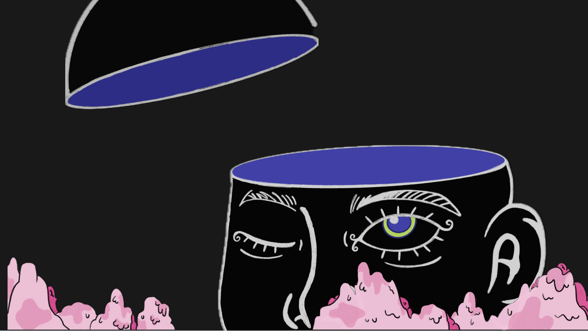

Small Tags,
Big Inspirations.
작은 태그들이 모여 큰 영감이 된다.
A minimalist visual repository documenting typography, textile labels, stitching formats, and tactile brand identity details from worldwide vintage and contemporary apparel.
Why I Collect
Clothes Tags
옷에 달려 오는 작은 라벨과 택은 단순한 가격표 이상의 역할을 합니다. 섬유의 원산지, 가공 방식, 타이포그래피의 세리프 두께까지 브랜드의 태도와 철학이 가장 집약된 미니어처 캔버스입니다.
“Clothing labels do more than show a price. They’re miniature canvases that hold a brand’s attitude and philosophy.”
오래된 워크웨어의 단단한 마닐라지부터 직조 패브릭 택까지, 버려지기 쉬운 부자재를 영감의 아카이브로 체계화하여 디자인의 기초를 다시 들여다봅니다.

PHOTO: MY PERSONAL TAG COLLECTION


My Favorite Tag: Design Analysis
An in-depth exploration of a selected tag, highlighting the design elements that make it visually distinctive.
VISUAL ANALYSIS / TAG COLLECTION
Bold Lettering & Typography
굵고 둥근 형태의 타이포그래피를 활용해 브랜드의 강렬한 인상을 전달합니다. 특히 알파벳 ‘i’를 원형 요소의 반복으로 표현하여 경쾌하고 통통 튀는 분위기를 연출합니다.
STYLE: BOLD & ROUNDED LETTERING
Vivid Colors & Geometric Shapes
블루, 옐로, 핑크, 그린 등 선명한 색상을 대비시켜 경쾌한 분위기를 연출합니다. 타원형 도형과 반복적인 색면 구성으로 시각적 통일감을 형성합니다.
PALETTE: VIBRANT PRIMARY COLORS

Printed Fabric Texture
직물 특유의 미세한 표면 질감과 인쇄된 그래픽이 어우러져 있습니다. 평면적인 색상 위에 소재의 물성이 더해져 입체적인 인상을 줍니다.
SURFACE: TEXTILE & PRINT
Playful & Expressive Identity
과감한 색상과 개성 있는 타이포그래피를 통해 브랜드의 자유롭고 유쾌한 이미지를 표현합니다. 독특한 그래픽 조합으로 브랜드만의 시각적 개성을 드러냅니다.
MOOD: PLAYFUL & EXPRESSIVE
JOIN THE COLLECTIVE REPOSITORY
수집을 통해 완성하는
나만의 비주얼 아카이브.
패션 디자이너, 그래픽 아티스트, 텍스타일 연구자를 위한 오픈 아카이브. 당신의 옷장에 잠들어 있는 태그를 사진으로 기록하고 공유해보세요.
CURATED TAG COLLECTION • VISUAL DESIGN ARCHIVE • DESIGN RESEARCH